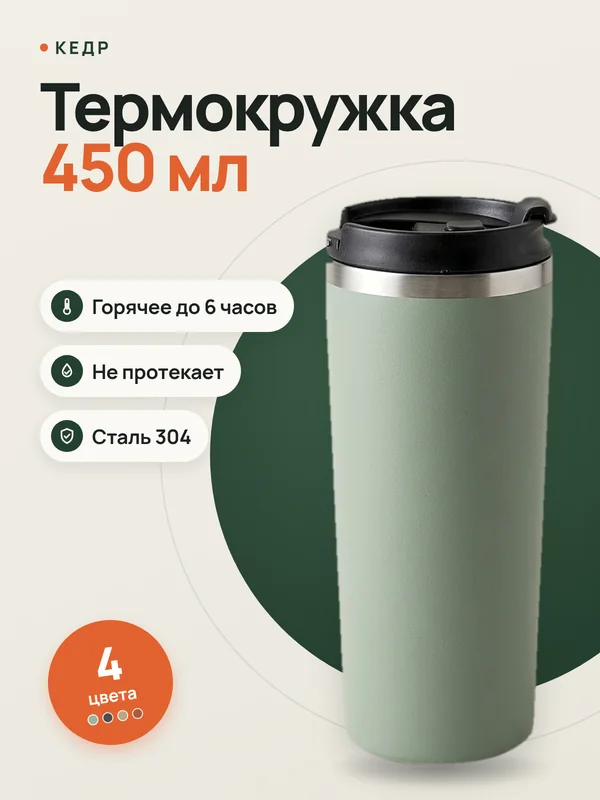
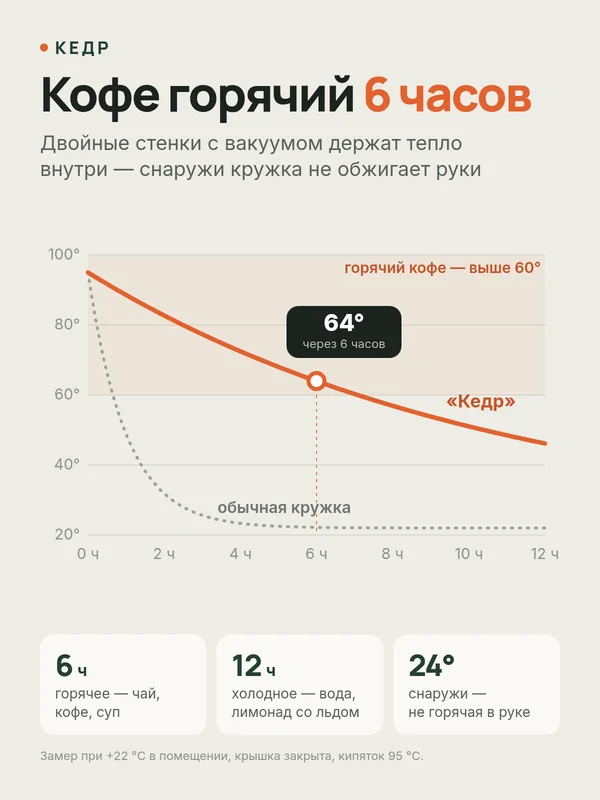
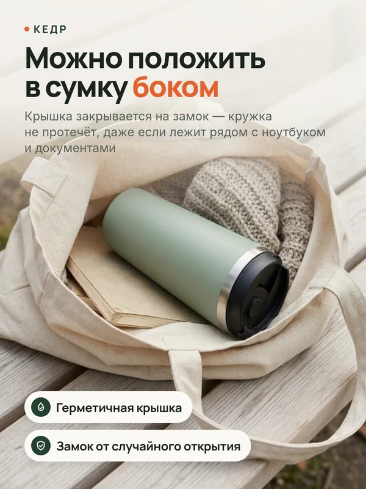
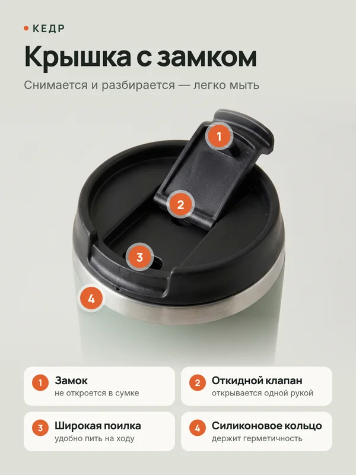
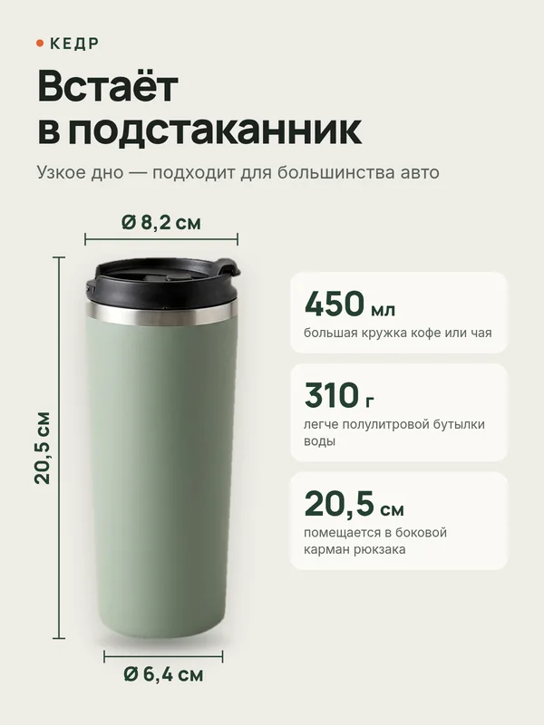
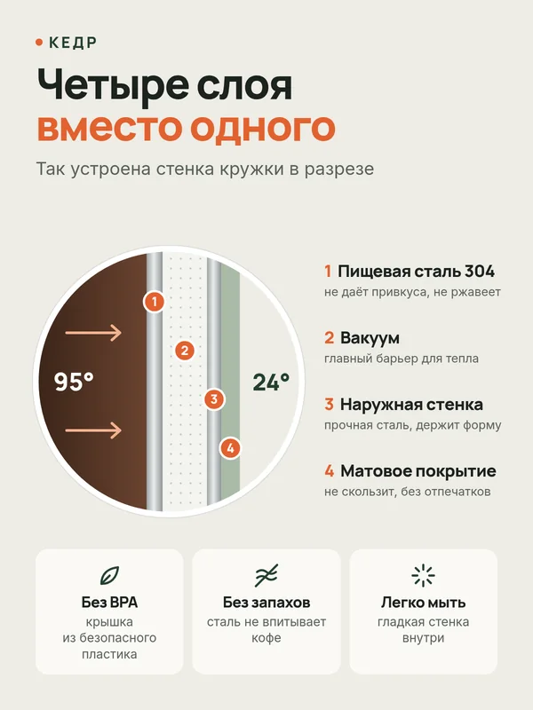
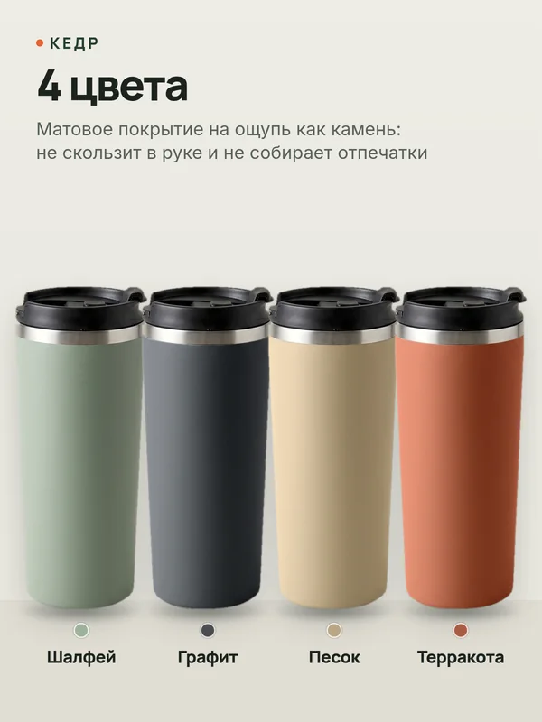
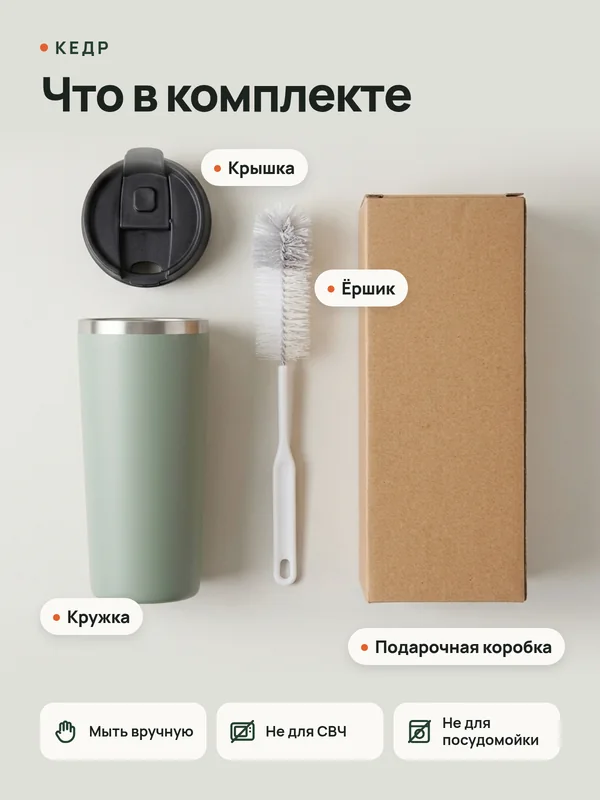
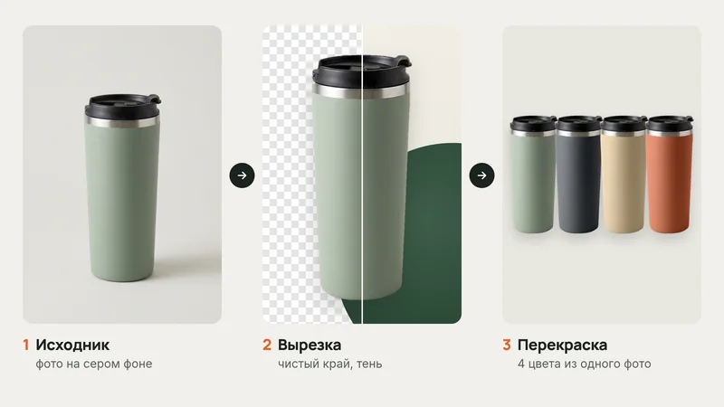

Термокружка «Кедр» — карточки для Wildberries и Ozon
Набор из 8 карточек товара: обложка, которая выделяется в выдаче, и слайды, которые отвечают на вопросы покупателя раньше, чем он их задаст. Бренд, товар и характеристики вымышлены, фото сгенерировал ИИ — обработка и дизайн мои.
- ФорматPNG, 3:4
- Объём8 карточек
- Размер1200 × 1600 px
- ФотоИИ + обработка
















Задача
Показать, как выглядит полный набор карточек для товара на Wildberries или Ozon. Товар — термокружка: покупатель сравнивает, сколько она держит тепло, не протечёт ли и влезет ли в подстаканник.
Условие — карточки работают на телефоне: обложка читается в выдаче, где она шириной с палец, а каждый слайд понятен за пару секунд.
Решение
Один слайд — один вопрос покупателя. Порядок — как он решает, брать или нет: сначала главная выгода, потом детали и сомнения.
- Обложка
- Тепло
- В сумке
- Крышка
- Размеры
- Материалы
- Цвета
- Комплект
Обложка для выдачи
В ленте на телефоне карточка шириной около 170 px. Поэтому на обложке крупно товар, объём и три выгоды — без мелкого текста.
Показать, а не похвалить
Вместо «отлично держит тепло» — график остывания рядом с обычной кружкой и цифра через 6 часов.
Фото под задачу
Живое фото — чтобы показать, что кружку можно класть в сумку. Крупный план с номерами — чтобы объяснить крышку.
Один стиль на все слайды
Одна шапка, два шрифта и один акцентный цвет — в галерее товара слайды выглядят как набор.
Обработка фото
Исходник — фото кружки на сером фоне. Для демо его сгенерировал ИИ: настоящих снимков у вымышленного товара нет. Дальше — обработка: вырезал кружку с фона, выровнял край и дно, добавил тень и перекрасил корпус в 4 цвета без новых съёмок.


В реальном заказе работаю с вашими фото: убираю фон, выравниваю свет и цвет, чищу мелкие дефекты.
Результат
8 карточек в PNG 1200 × 1600 — формат 3:4, который принимают Wildberries и Ozon. PDF — чтобы посмотреть весь набор одним файлом.
Нужны карточки для вашего товара?
Пришлите фото товара и ссылку на карточку или конкурентов — предложу структуру слайдов и назову цену и срок до начала работы.